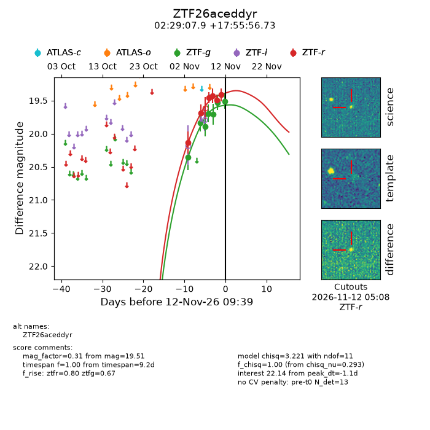
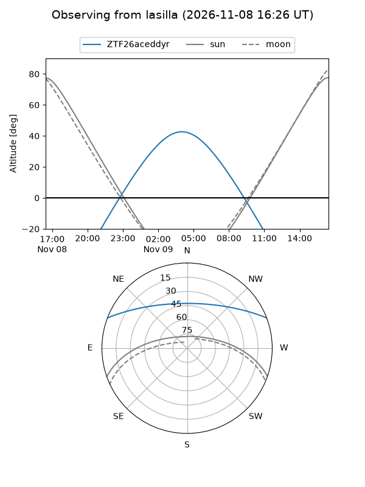
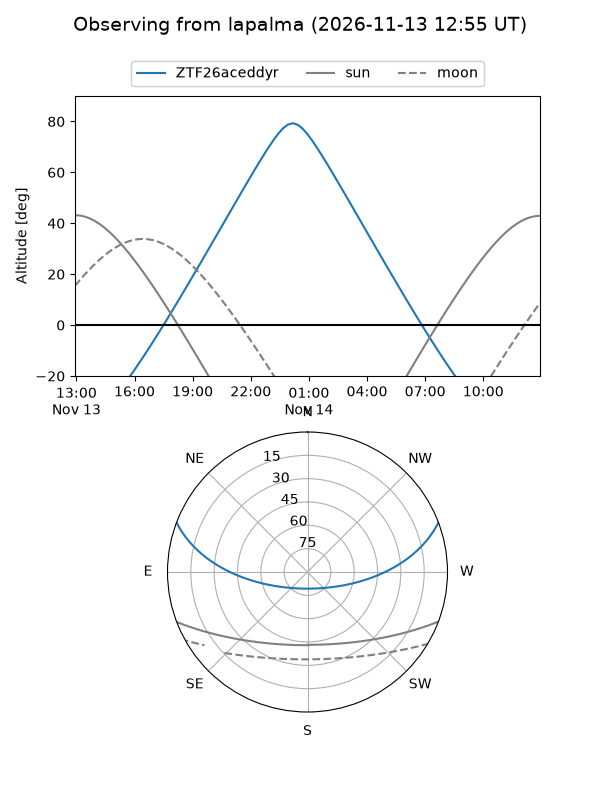
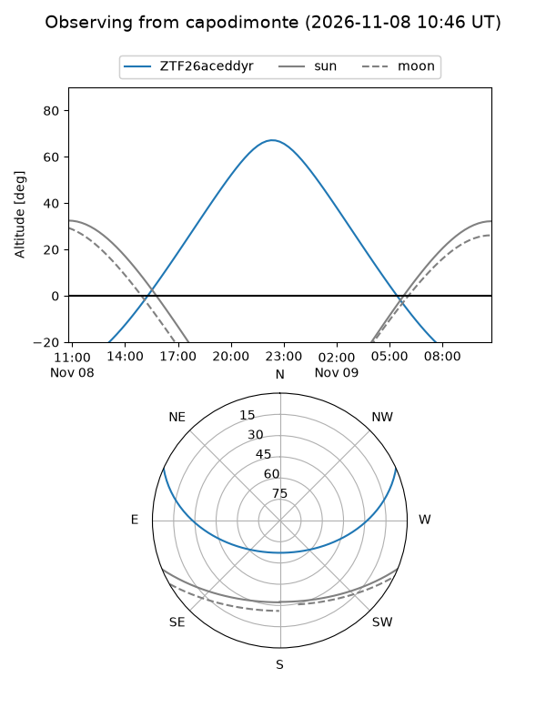
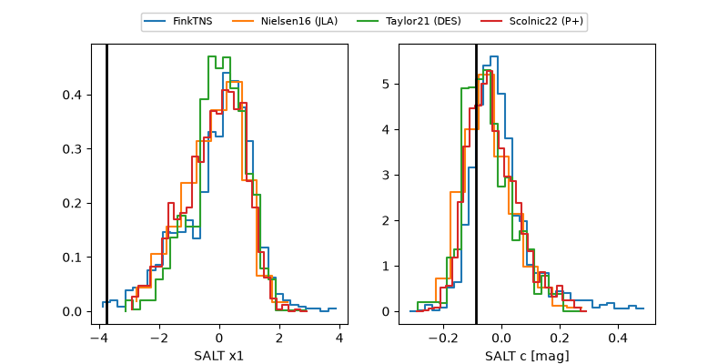

ZTF26aceddyr
Target ZTF26aceddyr at 2026-11-12 09:45
Aliases and brokers:
FINK-ZTF: ztf.fink-portal.org/ZTF26aceddyr
Lasair-ZTF: lasair-ztf.lsst.ac.uk/objects/ZTF26aceddyr
ALeRCE-ZTF: alerce.online/object/ZTF26aceddyr
Direct TNS query: direct search
alt names
ZTF26aceddyr (ztf,fink_ztf)
Coordinates:
equatorial (ra, dec) = 37.2829,+17.93243
equatorial (HMS+DMS) = 02:29:07.89,+17:55:56.73
galactic (l, b) = (153.3873,-39.09335)
Flags:
peak dt: -1.1
Photometry:
last ztfg=19.51, ztfr=19.42
7 ztfg, 6 ztfr detections
Lightcurve

Visibility



Additional plots
